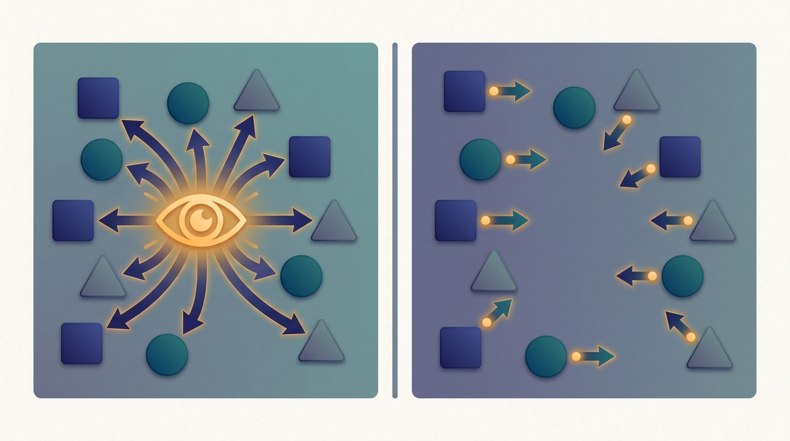

"At training time I had a god's-eye view of every teammate's hand. At deployment they took the binoculars away and asked me to keep playing as if I still had them."
An Actor That Learned to Cope With Local Observations

Centralized Training with Decentralized Execution (CTDE) is the dominant multi-agent reinforcement learning paradigm because it splits the problem along the same seam that organizes this entire book: train centrally where global information is cheap, then serve in a fully decentralized way where each agent sees only what its own sensors report. During training, inside a simulator or a shared learner, you have access to the full joint state and every agent's action, and you use that to build a critic for which the environment looks stationary. That stationarity is exactly what independent learning (Section 30.4) could never have. At execution time you throw the global information away: each agent runs a policy that conditions only on its own local observation, so deployment needs no communication and no central coordinator. This section explains why that asymmetry is sound, what it assumes, and why it is the same train-centrally/serve-distributed move you have already met in data-parallel training and fleet inference.
In the previous section we watched independent learners fail in a way that was not a bug but a structural feature: when every agent updates its own policy, each agent's environment contains the other learning agents, so the transition and reward dynamics one agent perceives drift as its partners change. The Markov assumption that underpins single-agent reinforcement learning breaks, value targets chase a moving reference, and convergence guarantees evaporate. CTDE is the standard answer. It does not pretend the agents can talk to each other at deployment; it exploits a different resource entirely, the privileged information that a training pipeline already has, and spends it where it does the most good: stabilizing the learning signal.
The core observation is almost embarrassingly simple. Non-stationarity afflicts a critic that conditions on too little. If a critic sees only one agent's action, the same action maps to wildly different returns as the other agents shift their policies. But a critic that sees the joint action of all agents, evaluated against the full state, faces a fixed mapping: for a given environment, a given joint action yields a given return distribution, and that never changes no matter how the agents' policies evolve. The environment, viewed through the joint action, is stationary by construction. CTDE puts that stationary critic in the training loop and lets it teach decentralized actors that will never get to see the joint action themselves.
Figure 30.5.1 is the whole idea in one picture, and the rest of this section unpacks each half: why the centralized critic restores stationarity, why decentralized actors stay deployable, the two algorithm families CTDE enables, and the distributed-systems reading that makes this paradigm feel inevitable rather than clever.
1. Why a Joint-Action Critic Is Stationary Intermediate
Recall the Markov-game setting from Section 30.2: $n$ agents, a global state $s$, and at each step a joint action $\mathbf{a} = (a_1, \dots, a_n)$ that drives a transition $s \to s'$ and a reward. From agent $i$'s lonely point of view, holding only its own action $a_i$ fixed, the next state and reward depend on the actions $\mathbf{a}_{-i}$ of every other agent, and those are produced by policies $\pi_{-i}$ that change every time the partners learn. Agent $i$'s effective transition kernel is
$$P_i(s' \mid s, a_i) = \sum_{\mathbf{a}_{-i}} \Big( \prod_{j \neq i} \pi_j(a_j \mid o_j) \Big)\, P(s' \mid s, a_i, \mathbf{a}_{-i}),$$which depends on the partners' policies $\pi_{-i}$ and therefore drifts as they update. That moving $P_i$ is precisely the non-stationarity that breaks the independent learners of Section 30.4. Now condition instead on the full joint action. The true environment kernel $P(s' \mid s, \mathbf{a})$ carries no policy term at all; it is a fixed property of the game. A critic that estimates a joint value $Q(s, \mathbf{a})$ is therefore fitting a stationary target: the same $(s, \mathbf{a})$ always induces the same return distribution, whatever the agents are currently doing. The policies decide which $(s, \mathbf{a})$ pairs get visited, but they cannot make a fixed pair mean two different things.
Non-stationarity in multi-agent learning is not intrinsic to the game; it is an artifact of a value function that conditions on too little. A critic that sees only $a_i$ inherits the drift of the partners' policies. A critic that sees the joint action $\mathbf{a}$ and the full state $s$ conditions on everything that the environment actually responds to, so its learning target stops moving. CTDE pays for stationarity with information at training time, and the only place that information is free is inside the learner.
This is why a centralized critic is more than a convenience. It changes the mathematical object being learned from a non-stationary, ill-posed regression into the ordinary, stationary value-regression that single-agent reinforcement learning already knows how to solve. Everything downstream, from the actor updates of MADDPG and MAPPO to the value mixers of QMIX, rests on this one structural fact.
2. Why the Actors Can Still Be Decentralized Intermediate
A natural worry: if the critic needs the joint action to be well-behaved, surely the policy does too, and then deployment would require every agent to know what every other agent is doing. CTDE avoids this through an asymmetry in who needs what, and when. The critic's job is to supply a low-variance learning signal during training, and it is allowed to be greedy with information because training-time global access is assumed. The actor's job is to choose an action at execution time from whatever the agent can actually observe, so it is constrained to its local observation $o_i$ by construction. The two objects are trained together but deployed apart.
Concretely, each actor is a policy $\pi_i(a_i \mid o_i; \theta_i)$ that reads only $o_i$. The centralized critic $Q(s, \mathbf{a}; \phi)$ enters only the gradient that updates $\theta_i$, never the forward pass that the actor runs in the field. A common decentralized policy-gradient form makes this explicit: the gradient for actor $i$ is
$$\nabla_{\theta_i} J = \mathbb{E}\big[\, \nabla_{\theta_i} \log \pi_i(a_i \mid o_i)\; A_i(s, \mathbf{a}) \,\big], \qquad A_i(s, \mathbf{a}) = Q(s, \mathbf{a}) - b_i(s, \mathbf{a}_{-i}),$$where the advantage $A_i$ is computed by the centralized critic but multiplies a score function that depends only on the local $o_i$. After training, $Q$ is deleted; the deployed artifact is the set of small per-agent policies, each a function of its own observation. This is the same separation of a heavy training-time apparatus from a light serving-time artifact that you saw when a data-parallel training job's all-reduce machinery (Chapter 15) vanishes and leaves behind a single set of weights to serve.
Think of the centralized critic as a coach who watches the whole field from the stands, sees every player's position, and shouts targeted feedback during practice. Come game day, the coach is not allowed on the pitch. Each player runs on instinct and their own narrow view of the action. CTDE is the principle that a player coached with a full-field view plays better alone than a player who only ever saw their own corner, even though both end up playing with the same blinkers on.
3. A Toy Centralized Critic Versus Independent Learners Intermediate
The cleanest way to feel the difference is to build both in a few lines and watch their critics. The code below runs a two-agent stag-hunt, a small cooperative coordination game where each agent privately chooses a safe action or a risky high-payoff action that only pays when both choose it. One configuration trains a centralized critic that conditions on the joint action; the other trains independent per-agent critics that each see only their own action, exactly the setup that failed in Section 30.4. In both cases the actors themselves are decentralized: each policy reads only its own (constant) local observation. We measure the tail-window mean absolute temporal-difference error of each critic, which is a direct readout of how stationary its learning target is.
import numpy as np
# A 2-agent stag-hunt: action 0 is "hare" (safe, pays 1 regardless of partner),
# action 1 is "stag" (pays 4 only if BOTH choose it, else 0). Cooperating on stag
# is jointly optimal but risky, the classic coordination trap. Reward R[a0,a1] is
# shared by both agents (fully cooperative).
R = np.array([[1.0, 1.0],
[0.0, 4.0]]) # (stag,stag)=4 ; hare always pays 1 ; stag alone = 0
rng = np.random.default_rng(7)
EPISODES = 8000
ALPHA = 0.05 # critic learning rate
EPS = 0.15 # exploration for the behaviour policy
def softmax(z):
z = z - z.max()
e = np.exp(z)
return e / e.sum()
def run(centralized):
# Decentralized ACTORS in both modes: each agent has a 2-logit policy that
# depends ONLY on its own (constant) local observation.
logits = [np.zeros(2), np.zeros(2)]
if centralized:
Q = np.zeros((2, 2)) # critic sees the JOINT action: Q[a0, a1]
else:
q = [np.zeros(2), np.zeros(2)] # each critic sees only its OWN action
td_trace = []
for ep in range(EPISODES):
probs = [softmax(logits[i]) for i in range(2)]
a = []
for i in range(2): # epsilon-greedy behaviour policy
if rng.random() < EPS:
a.append(rng.integers(2))
else:
a.append(int(rng.random() > probs[i][0]))
a0, a1 = a
r = R[a0, a1]
if centralized:
td = r - Q[a0, a1] # target stationary: sees full (a0,a1)
Q[a0, a1] += ALPHA * td
for i in range(2): # CTDE actor update via joint critic
other = 1 - i
for ai in range(2):
if i == 0:
adv = sum(probs[other][aj] * Q[ai, aj] for aj in range(2))
else:
adv = sum(probs[other][aj] * Q[aj, ai] for aj in range(2))
logits[i][ai] += 0.02 * adv
else:
td = 0.0
for i in range(2): # each critic sees only a_i ...
e = r - q[i][a[i]] # ... so its target is non-stationary
q[i][a[i]] += ALPHA * e
td += abs(e)
td /= 2
for i in range(2):
for ai in range(2):
logits[i][ai] += 0.02 * q[i][ai]
td_trace.append(abs(td))
tail = np.mean(td_trace[-500:])
p0, p1 = softmax(logits[0]), softmax(logits[1])
p_coord = p0[1] * p1[1] # P(both pick the risky optimum)
return tail, p_coord
c_td, c_coord = run(centralized=True)
i_td, i_coord = run(centralized=False)
floor = 1e-4
print("mode tail |TD error| P(both pick stag, the optimum)")
print(f"CTDE (centralized critic) {c_td:8.4f} {c_coord:6.3f}")
print(f"independent learners {i_td:8.4f} {i_coord:6.3f}")
print(f"Stability ratio: independent is >= {i_td/floor:,.0f}x noisier at convergence.")
mode tail |TD error| P(both pick stag, the optimum)
CTDE (centralized critic) 0.0000 1.000
independent learners 0.4763 1.000
The centralized critic conditions on the JOINT action, so its target is
stationary and the TD error collapses to floating-point zero. The
independent critics each see only their own action; the partner keeps
shifting, so their target never settles and |TD error| stays near 0.48.
Stability ratio: independent is >= 4,763x noisier at convergence.The numbers make the abstract argument tangible. The centralized critic's target is fixed, so its error decays to the floating-point floor; the independent critics chase a partner that keeps moving, so their error plateaus far above zero. In this tiny game both actor sets still stumble onto the optimum, but in larger games that residual critic noise is exactly what derails independent learning, and removing it is the entire value of CTDE. The actors, crucially, never used anything but their own local observation, which is why the policies this loop produces are deployable without a coordinator.
CTDE is the multi-agent instance of the book's recurring split. In data-parallel training (Chapter 15) a central all-reduce coordinates many workers during training, but the served model is one decentralized artifact. In distributed inference (Chapter 23) a control plane schedules a fleet that then serves requests independently. CTDE plays the same chord: the centralized critic is a control-plane convenience that exists only at training time, and the decentralized actors are the deployable data plane. Whenever you meet a "global at training, local at serving" structure later, recognize it as the same engineering choice CTDE makes here.
Who: A robotics platform engineer at a fulfillment company training a fleet of picking robots to share aisles without collisions.
Situation: The robots had to coordinate paths in real time, but the warehouse radio was saturated, so runtime agent-to-agent messaging was not an option.
Problem: Independent learners, one policy per robot trained in isolation, kept oscillating: as each robot learned, its neighbors' behavior shifted, the value estimates chased a moving target, and the fleet never settled on a stable yielding convention.
Dilemma: Add a runtime coordinator and a shared map (impossible on the congested network), or keep execution fully decentralized and somehow stabilize training another way.
Decision: They adopted CTDE, training in a high-fidelity warehouse simulator where the full floor map and every robot's action were free to read, while constraining each deployed policy to its own onboard sensors.
How: A centralized critic conditioned on the global map and the joint action supplied the advantage signal of Section 2; each robot's actor saw only its local lidar and was the sole artifact shipped to the floor, exactly the asymmetry of Figure 30.5.1.
Result: Training stabilized within the simulator (the joint-action critic's value stopped drifting, as Output 30.5.1 predicts), and the deployed robots coordinated yielding behavior with zero runtime communication, because each had been coached with a god's-eye view it no longer needed.
Lesson: When runtime communication is impossible but a simulator is available, spend global information at training time to cure non-stationarity, and ship a policy that survives on local observations alone.
4. The Two Families CTDE Enables Beginner
CTDE is a paradigm, not a single algorithm, and it branches into two algorithm families that the next two sections develop in full. The first family keeps a centralized critic and decentralized actors literally, in the actor-critic style of Code 30.5.1: methods such as MADDPG and MAPPO (Section 30.7) learn one or more joint-action critics that train per-agent policies, each conditioned on local observations. The second family takes a more structured route for the cooperative case: instead of a free-form joint critic, it learns per-agent value functions and a learned rule for mixing them into a joint value, so that maximizing the joint value decomposes into each agent independently maximizing its own. That is value decomposition, the subject of VDN and QMIX (Section 30.6), and it is CTDE with an architectural constraint that guarantees decentralizable greedy action selection.
| Family | Centralized object | How execution stays local | Where the book develops it |
|---|---|---|---|
| Centralized critic, decentralized actors | A joint-action critic $Q(s, \mathbf{a})$ shared across agents | Each actor $\pi_i(a_i \mid o_i)$ is trained by the critic but runs on $o_i$ alone | MADDPG, MAPPO (Section 30.7) |
| Value decomposition | A mixer that combines per-agent $Q_i(o_i, a_i)$ into a joint $Q_{\text{tot}}$ | A monotonic mixer makes $\arg\max Q_{\text{tot}}$ equal per-agent $\arg\max Q_i$ | VDN, QMIX (Section 30.6) |
Table 30.5.1 is a map of the chapter's back half. Both rows obey the CTDE contract; they differ only in how they package the centralized value and what they assume about the reward structure (the decomposition family targets cooperative, shared-reward games, while centralized critics extend to mixed and competitive settings from Section 30.3). Reading the two sections that follow as two instantiations of the one principle in Figure 30.5.1 is the right mental model.
The hand-rolled critic in Code 30.5.1 is about sixty lines once you add function approximation and proper advantage estimation. Established MARL frameworks reduce CTDE to a configuration switch. In EPyMARL and the PyMARL2 lineage (the standard codebases for MADDPG, MAPPO, VDN, and QMIX), turning on centralized training is a single flag that points the critic at the global state rather than the local observation:
# EPyMARL: train MAPPO with a centralized critic (CTDE) on a cooperative task.
# One config switch decides what the critic conditions on; the actors stay local.
# python src/main.py --config=mappo --env-config=gymma with \
# env_args.key="lbforaging:Foraging-8x8-2p-3f-v3" \
# standardise_returns=True \
# use_rnn=True \
# obs_agent_id=True \
# critic_type="cv_critic" # centralized state-value critic = the CTDE switch
critic_type="cv_critic" in EPyMARL feeds the centralized critic the joint state while the actors keep conditioning on local observations, so the entire training/execution asymmetry of Figure 30.5.1 is selected by a single line. The framework handles the joint-state batching, advantage computation, and per-agent policy updates that Code 30.5.1 wrote out by hand.5. The Assumption, and When It Holds Advanced
CTDE rests on one assumption that must be stated plainly: the global information (the full state, every agent's observation, the joint action) is available at training time. This is true by construction in a simulator, where you control the environment and can read every variable, and it is true in a centralized learner that collects all agents' trajectories into one training process, the same arrangement the distributed RL infrastructure of Chapter 20 already builds for single-agent training at scale. When you train in simulation and deploy to the field, which is the overwhelmingly common pattern for robotics, traffic control, and game-playing agents, the assumption holds cleanly: pay for global information where it is free (the simulator), spend none of it where it is expensive (the deployed fleet).
The assumption frays in two situations worth naming. First, when there is no simulator and you must learn from decentralized real-world experience with genuine partial observability and no central collector, the joint action may simply not be observable even at training time; this pushes you toward the decentralized and communication-aware methods that connect to federated learning (Chapter 14). Second, when the simulator's global state does not match what governs the real deployment, a critic trained on privileged information can teach actors a policy that overfits to cues unavailable in the field, a sim-to-real gap sharpened by the very asymmetry CTDE exploits. Knowing that CTDE is a training-time bargain, not a free lunch, is what keeps you from reaching for it when the bargain is not actually on offer.
CTDE remains the default, but recent work probes exactly where its assumptions bend. A line of 2024 to 2025 papers revisits whether centralized critics genuinely help: studies on the "centralized critic" question report that for many cooperative benchmarks a well-tuned independent or shared-parameter PPO (the IPPO and MAPPO comparison popularized by Yu et al.'s surprising-effectiveness study and its follow-ups) matches or beats elaborate centralized critics, sharpening the question of when the extra global information actually pays off. A second thread attacks the partial-observability and scalability limits: attention- and transformer-based centralized critics, and graph-structured mixers, aim to keep the joint critic tractable as the agent count grows, while offline MARL work (datasets and methods in the OMAR and CFCQL lineage) asks how to do CTDE when you cannot interact with a simulator at all and must learn the joint value from a fixed log. The honest current consensus: CTDE is the right default, its centralized critic is most valuable in genuinely mixed or hard-coordination games, and the frontier is making the centralized object scale and survive offline data. We return to the policy-gradient instances in Section 30.7.
6. The Distributed-Systems Reading Beginner
Step back and CTDE stops looking like a reinforcement-learning trick and starts looking like a familiar systems pattern. A distributed system routinely separates a control plane, which has a privileged global view and coordinates the system, from a data plane, which does the actual decentralized work at scale. Centralized training is a control-plane activity: a god's-eye learner with access to everything, run once, offline, where global information is cheap. Decentralized execution is the data plane: many independent agents acting on local information, in parallel, with no central bottleneck and no cross-agent communication required. The whole appeal of CTDE is that it confines the expensive global coordination to a phase (training) where you can afford it, and ships a deployment (execution) that has none of it.
This is the same split that lets a search company train a ranking model on a centralized cluster and then serve it from thousands of stateless replicas (Chapter 23), and the same split that lets multi-agent systems (Chapter 29) coordinate through a designed protocol rather than a shared brain. Game-theoretic equilibria (Chapter 28) tell you what a decentralized set of policies is converging toward; CTDE tells you how to train your way there using information the players will not have at the table. Read this way, CTDE is not an exception to the book's thesis but one of its clearest expressions: distribute the work that must be distributed (execution), centralize the coordination only where it is cheap (training), and never confuse the two.
With the paradigm in hand, the next two sections instantiate it. Section 30.6 takes the value-decomposition route, building the monotonic mixers of VDN and QMIX that make a centralized joint value decentralizably greedy. Section 30.7 takes the centralized-critic route, deriving the policy-gradient methods MADDPG and MAPPO directly from the advantage form in Section 2. Both are CTDE; both train with the god's-eye view of Figure 30.5.1 and deploy with the blinkers on.
Consider three agents cooperating in a partially observable Markov game. State precisely, for each of the following, whether it is available to (a) a centralized critic at training time, (b) a decentralized actor at execution time: the global state $s$; agent $i$'s own observation $o_i$; the joint action $\mathbf{a}$; another agent's policy parameters $\theta_j$. Then explain in one or two sentences why placing the joint action $\mathbf{a}$ in the critic restores the stationarity that placing only $a_i$ there destroys, referring to the kernel $P_i(s' \mid s, a_i)$ from Section 1.
Modify Code 30.5.1 so the "centralized" critic is fed only agent 0's action (replace the joint index $Q[a_0, a_1]$ with a per-agent index and update accordingly), turning it back into an independent learner while keeping every other line identical. Re-run and compare the tail-window temporal-difference error to the original CTDE run. Then partially restore information by letting the critic see agent 0's action and a one-step-stale copy of agent 1's action; measure where the temporal-difference error lands between the two extremes. Explain what your three numbers say about how much of the stationarity benefit comes from seeing the full joint action versus a delayed approximation of it.
You are asked to deploy a fleet of warehouse robots that must coordinate without any runtime communication. For each of these training regimes, decide whether CTDE's training-time global-information assumption (Section 5) holds, and justify it: (a) you have a high-fidelity warehouse simulator; (b) you can only collect logs from the real robots, each logging its own local observations and actions but no global map; (c) you have a simulator, but its global state includes the exact position of every package, information your real robots can never sense. For each case, state whether you would reach for a centralized critic, a decentralized communication-aware method, or a redesign of the simulator's state, and explain the failure you are avoiding.